Prom.voca
말해보카 Prom.voca는 프롬프트의 기본이 되는 영단어에 집중하여, 사용자가 언제든지 새로운 영단어를 모으고 학습하도록 유도하는 브라우저 확장 프로그램입니다. 세밀한 영단어의 뉘앙스 차이 안내와 추천을 통해 사용자가 더욱 다양하고 정확한 이미지를 만들도록 합니다.
Prom.voca is a browser extension that focuses on the English vocabulary that forms the foundation of prompts, encouraging users to collect and learn new English words at any time. By providing guidance on the subtle nuances of English words and offering recommendations, it helps users create more diverse and accurate images.
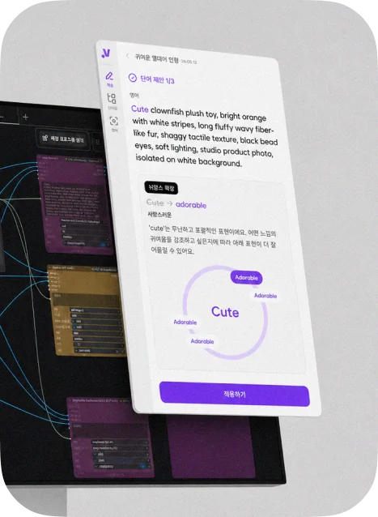
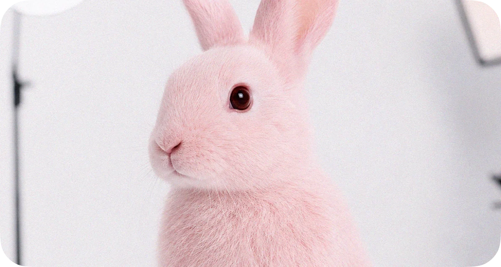
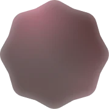
Pastel pink bunny soft lighting minimalist backgroundbackground
The Prompt Economy
마케팅, 음악, 패션 등 다양한 분야에서 AI가 필수적인 도구로 자리 잡은 지금,
생성형 AI의 결과물을 좌우하는 프롬프트의 중요성 또한 커지고 있습니다.
Now that AI has become an essential tool in various fields
the importance of prompts, which determine the output of generative AI, is also growing.
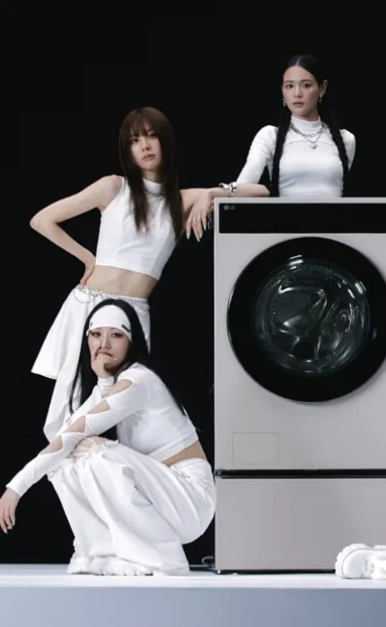
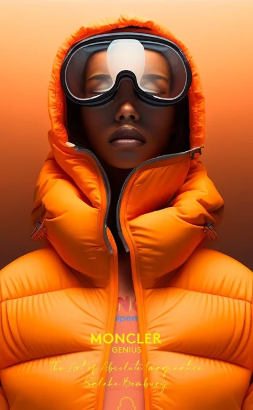
Marketing
Pop
Fine art
Fashion
problem
AI Language Gap
대다수의 생성형 AI가 영어를 중심으로 학습되어 있어,
비영어권 디자이너들은 프롬프트 작성 과정에서 AI에 의존하게 되고, 같은 의도를 전달하기 위해 더 많은 토큰을 사용해야 했습니다.
Since the vast majority of generative AI models are trained primarily on English, non-English-speaking designers have had to rely on AI when writing prompts and use more tokens to convey the same intent.
LAION-5B
데이터셋 (Stable Diffusion)
영어 학습 데이터 비율
0.0%
OpenAI, Claude
cl100k_base
영어 대비 한글 토큰 사용량
1.3~2.5배
언어적 차이로 인한 어려움
‘영어로 프롬프트를 써야 하는데..
잘 모르니까 그냥 다른 AI가 써준 프롬프트를
복붙해서 썼어요’
‘만들고 싶은 이미지가 있어도, 그거에 맞는 뉘앙스를
찾느라 토큰을 더 많이 썼던 거 같아요’
problem
Nuances That Make Prompting Difficult
비영어권 디자이너들이 프롬프트 작성에 어려움을 겪는 이유는,
같은 영단어라도 언어와 문화에 따라 받아들여지는 뉘앙스가 다르기 때문입니다.
Non-English-speaking designers struggle with prompt writing because the nuance of the same English words is perceived differently depending on language and cultural context.
사전적 의미: "작다"
Small
Tiny
Little
사전적 의미: "오래된"
Old
Aged
Ancient
사전적 의미: "걷다"
Walk
Stroll
Wander
project goal
AI는 단어싸움
프롬프트에 담을 수 있는 단어가 많아질수록, 만들어낼 수 있는 이미지는 더욱 섬세하고 넓어집니다.
우리는 당신의 단어를 확장해, 당신이 상상하고 그릴 수 있는 이미지의 세계를 확장합니다.
The more words you can include in your prompts, the more refined and expansive the images you can create become.
We expand your vocabulary to expand the world of images you can imagine and create.
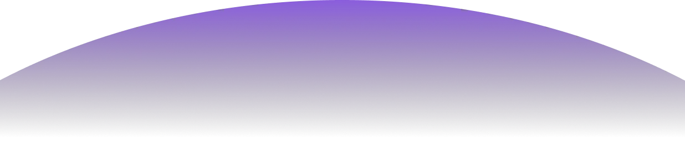
brand
뉘앙스부터 유사어까지, 말해보카
1년에 최대 사용자에게 9,200개의 어휘 습득하게 하는 말해보카.
정답만 알려주는 것이 아니라, 단어가 가진 뉘앙스와 확장성을 함께 이야기하며 진짜 내 것으로 만듭니다.
Malhaeboca helps users acquire up to 9,200 words in a year. Rather than just providing the correct answers,
we explore the nuances and versatility of each word, helping you truly make it your own.
말해보카는 국내 교육 소프트웨어 개발사 이팝소프트(ePopSoft)가
2019년에 출시한 AI 기반의 개인 맞춤형 영어 학습 어플리케이션입니다.
기존의 단어장과의 큰 차이점 중 하나는 문맥에 적절한 어휘를 학습할 수 있게 해 준다는 것이다. 즉 앱에 있는 어휘 퀴즈의 답을 정답/오답으로만 구분하는 것이 아니라 다소 어색한 표현이라는 등의 추가적인 설명을 해준다.
단어,어휘 위주
주도성
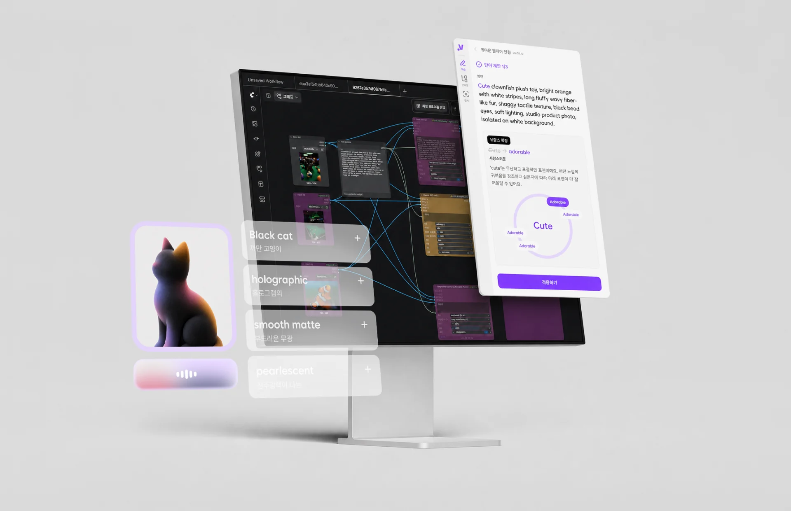
Promvoca brower extention
생성형 이미지 제작이 이루어지는 웹 브라우저에 Prom.voca가 확장 프로그램으로 더해집니다. 사용자는 웹에서 프롬프트를 입력하고
수정하며, 원하는 이미지에 가까워질 수 있습니다.
Prom.voca is added as an extension to the web browser where generative image creation takes place. Users can input and refine prompts directly on the web, getting closer to their desired image.
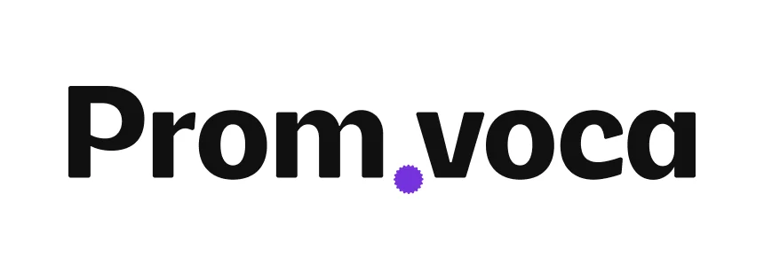
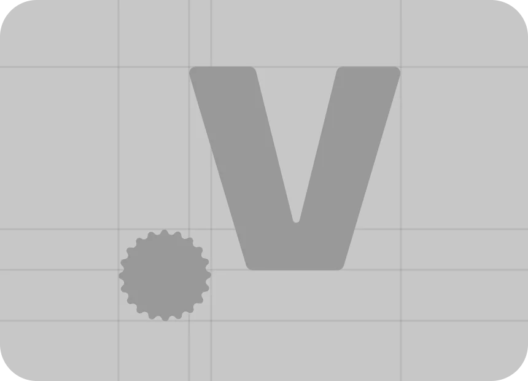
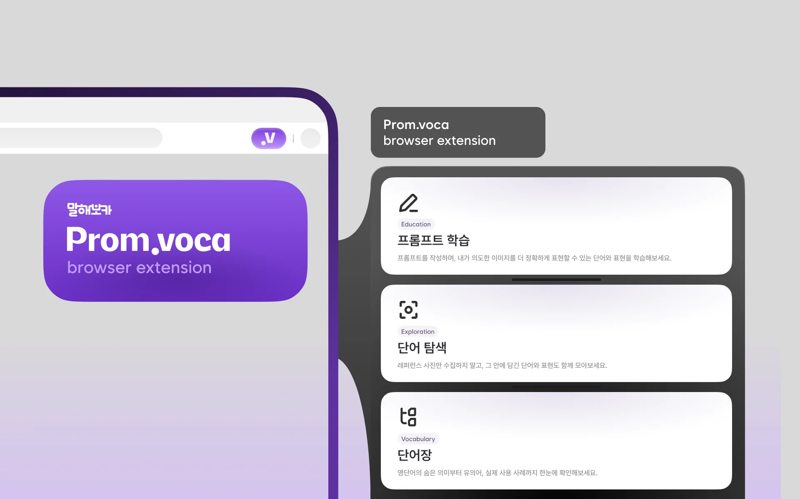
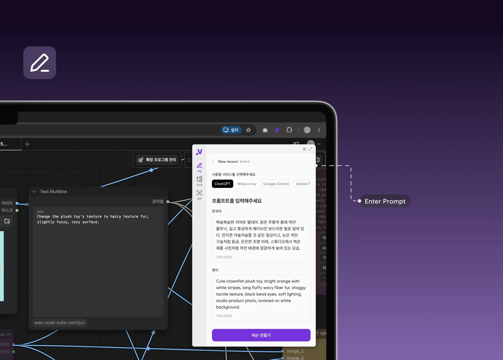
Prompt Writing Training
프롬프트를 작성하며, 내가 의도한 이미지를 더 정확하게 표현할 수 있는 단어와 표현을 학습해보세요.
While writing prompts, learn words and expressions that can more accurately express the image I intend.
내가 사용하는 모델과 원하는 프롬프트를 한국어·영어로
각각 입력하면, 웹 브라우저가 두 프롬프트를 비교·분석해
맞춤형 강의를 생성합니다.
When you input the model you're using and your desired prompt separately in Korean and English, the web browser compares and analyzes the two prompts to generate customized lessons.
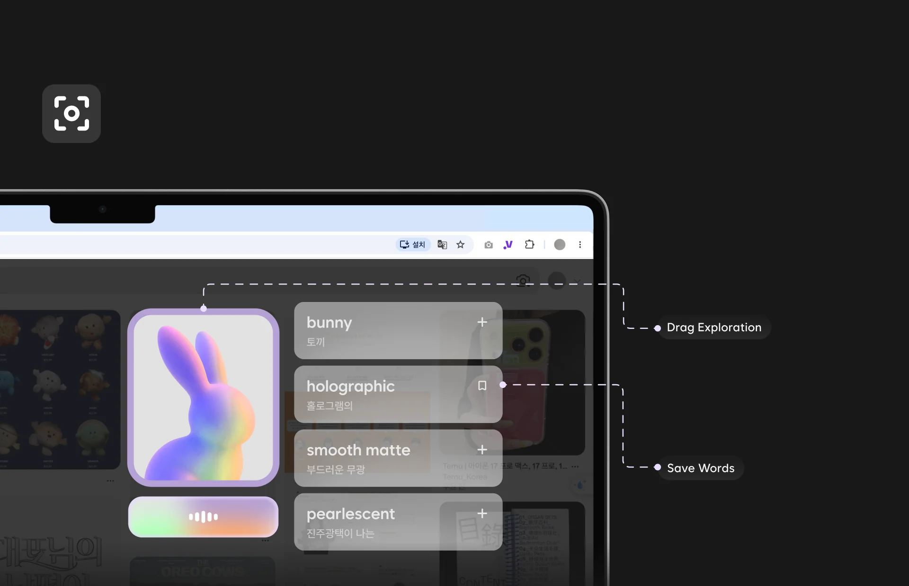
Word Exploration
레퍼런스 사진만 수집하지 말고, 그 안에 담긴 단어와 표현도 함께 모아보세요.
Don't just collect reference photos; also gather the words and expressions contained within them.
원하는 레퍼런스 사진 위에 드래그하면,
사진을 구성하는 핵심 영단어와 표현을 분석해줍니다.
When you drag over your desired reference photo, it analyzes the key English words and expressions that compose the image.
참고하고 싶은 단어들을 단어장에 저장할 수 있습니다.
You can save words you want to reference
to your personal vocabulary notebook.
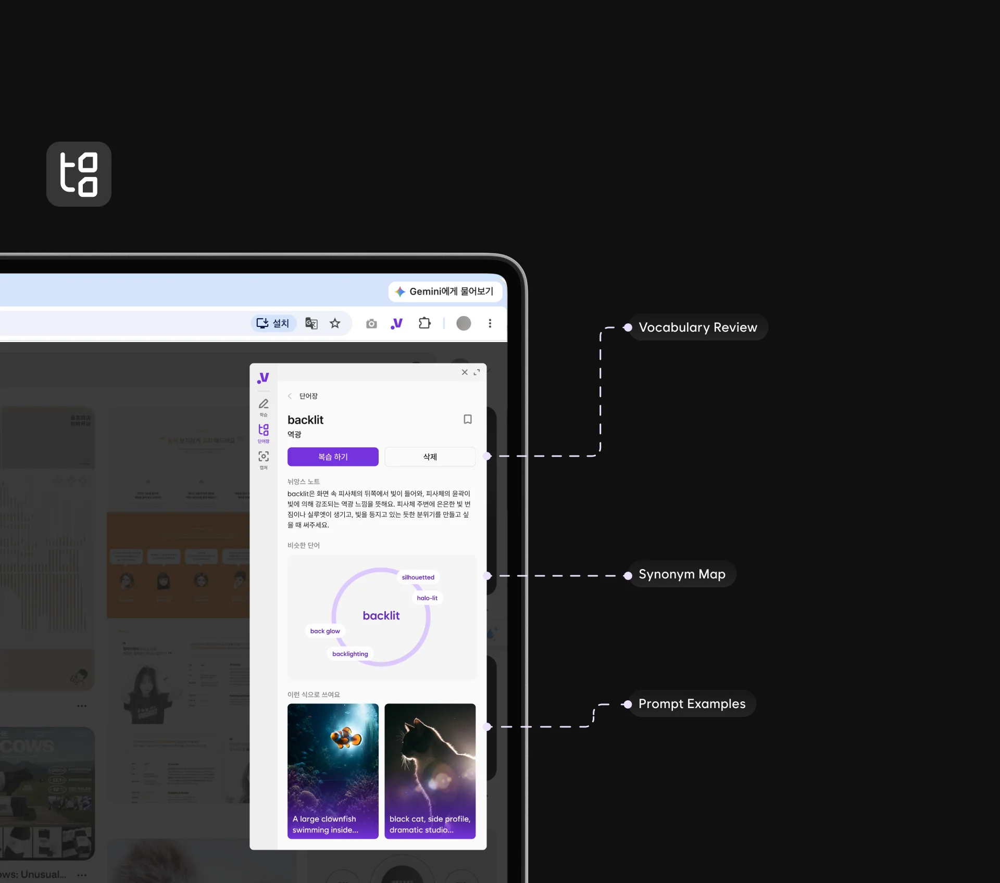
Vocabulary Notebook
영단어의 숨은 의미부터 유의어, 실제 사용 사례까지 한눈에 확인해보세요.
See everything at a glance—from the hidden meanings of English words to their synonyms and real-world usage examples.
전에 배운 단어를 간단한 퀴즈로 복습할 수 있어요.
You can review words you learned before through simple quizzes.
지금 보고 있는 단어와 비슷한 표현을 찾아볼 수 있어요.
You can find similar expressions to the word you're currently viewing.
단어가 쓰인 프롬프트와 결과물을 참고할 수 있어요.
You can reference prompts where the word was used and their results.